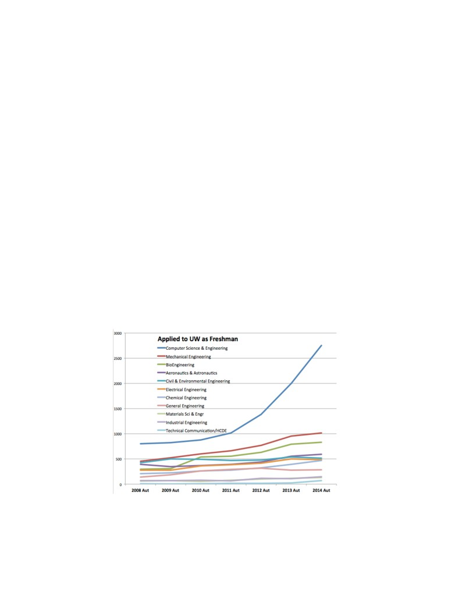
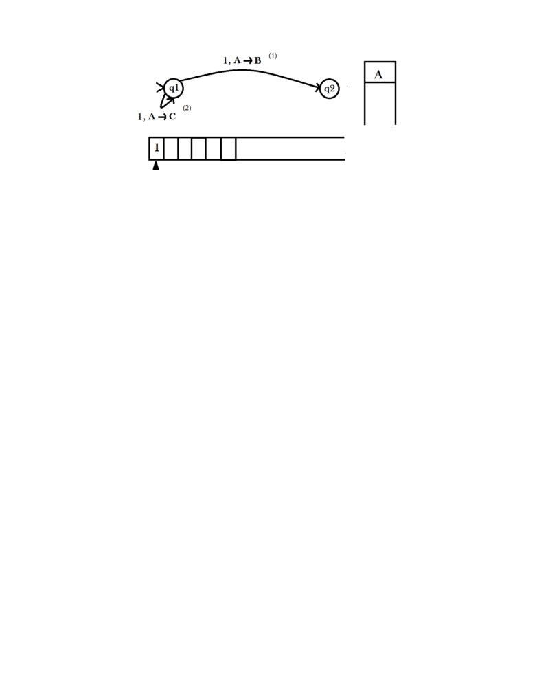
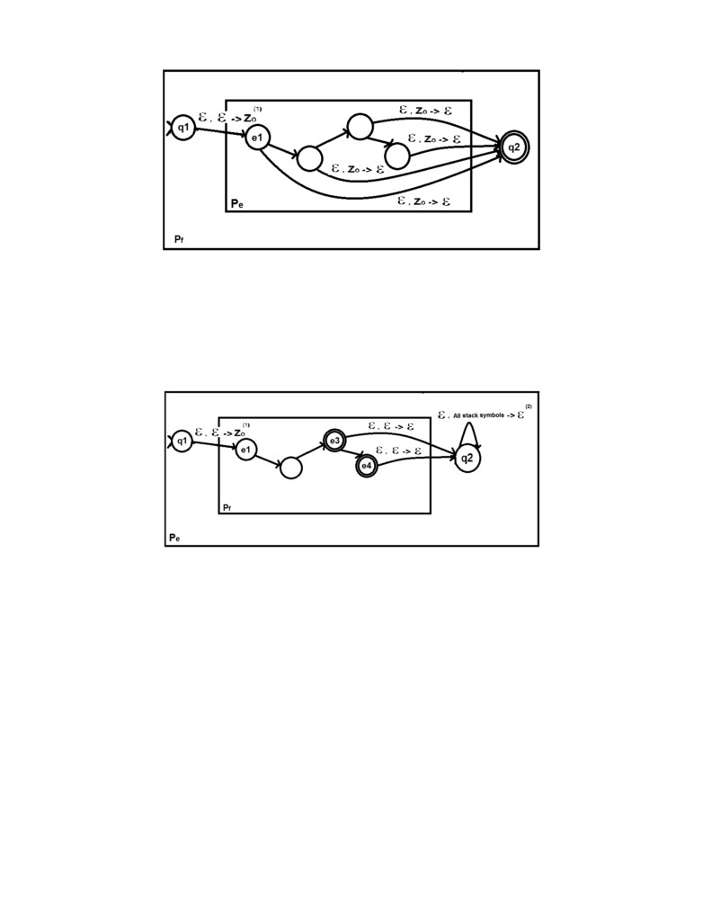
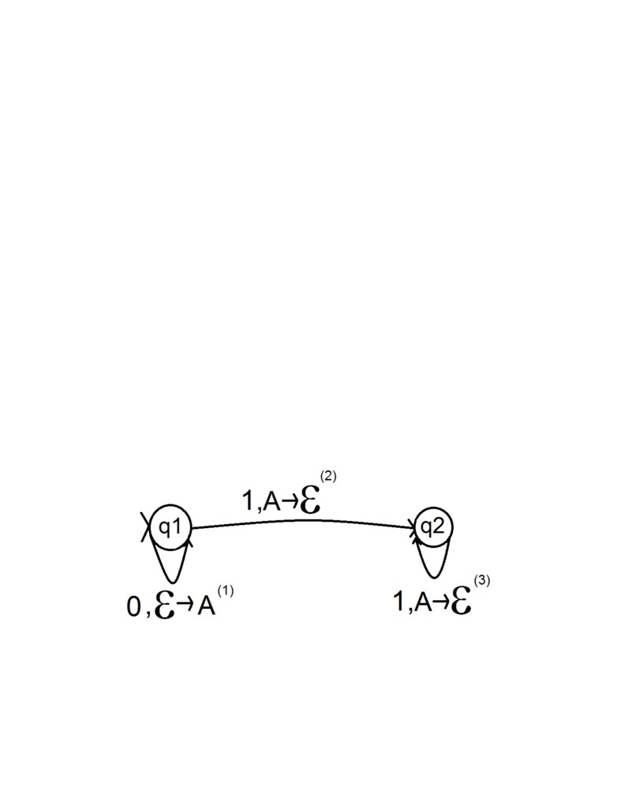
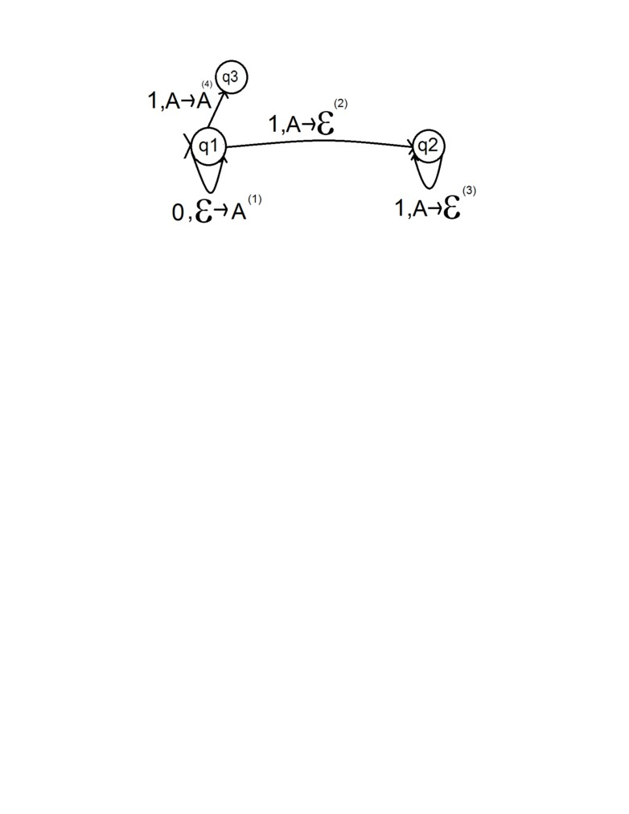
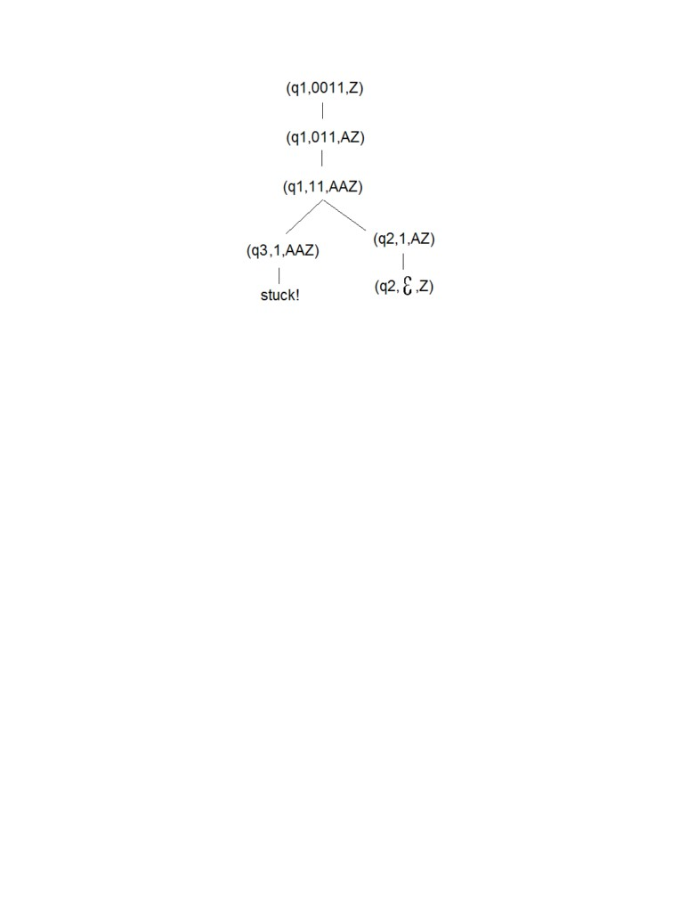

Chapter 1
Introduction
Push-down automata, or PDA for short, is one of the core technologies deployed in computa-
tional theory and computer science in general. The PDA allows us to theorize about machine
computation. A PDA in simple terms is a finite automaton with an auxiliary stack known as
a push-down. Anthony Oettinger first introduced PDAs as a model in 1961, and since then it
has further been explored. It is widely used in many areas, particularly in compiler design and
natural language processing [10, p. 210].
Figure 1.1: Graph showing number of students enrolling in each field at University of Wash-
ington per year [2]
1
The number of students who take Computer Science has surged each year Fig 1.1. The need
to produce an educational simulation to represent these abstract computational theories has
increased. Such computational tools are an integral foundation to Computer Science. There
is a whole section in Introduction to the Theory of Computation given to PDAs, highlighting
their importance [8]. It’s also covered in a wide range of syllabuses across different universities.
There exists many educational simulations for computational tools such as the Turing ma-
chine, or the Finite Automata. However, there doesn’t exist any well-defined applications that
can simulate a PDA successfully. There are several which are able to simulate a PDA, but
they all come with their flaws and limitations. The objective of this project is to make the first
education tool that can simulate both a non-deterministic PDA and a deterministic PDA with
clear defined notations. A successful application that can be both used by lecturers, to teach
with, and by students to learn from.
1.1
Background Theory
A push-down automaton, or PDA abbreviated, is a finite automaton (FA) with an additional
memory device called a push-down. The machine can pop and push symbols to and from the
stack. This additional stack gives PDAs unbounded memory; whereas FA’s memory is bounded
by the number of finite states it has. This additional power allows for the PDA to recognize
more languages than just the regular class of languages which FA recognizes. PDA also recog-
nize the class of context-free languages (CFL). CFL are languages that can be generated with
a context-free grammar.
{0k 1k |k ∈ N } is an example of a context-free language that cannot
be recognized by an FA but can easily be recognized by a PDA.
A stack only gives access to its top element at any one time, so the PDA is restricted in
how it can access its memory in between transitions. The Turing Machine (TM) is a more pow-
erful alternative to the PDA. For a PDA, you cannot traverse down a stack without forgetting
the rest of the stack. But with a TM, you can read and write in both directions on the input
tape. This kind of functionally allows for the TM to be able to recognize more languages.
There is no standardized understanding of a PDA; there are many varying explanations, with
differences ranging from how the PDA is defined to how the PDA accepts input. We will try and
use a more general theory that will offer both functionality and freedom to the user, without
2
accommodating to a particular understanding.
1.1.1
How it works?
PDAs works mostly the same way as a FA, taking a string as input and reading the symbol at
its head for each iteration. A symbol may also be popped or/and pushed from the stack. For
each transition, a new configuration occurs. On the automation of a given input ω by PDA
α, a sequence of configurations is produced. A configuration is a formal snapshot of the PDA
machine at any one moment in the computation.
A PDA’s configuration is defined as: (q,s,a)
• q : current state
• s : remaining input
• a : symbols on the stack
1.1.2
Transitions in PDA
Simply put, a transition represents a move from one configuration to the next; it may involve
pushing and popping symbols to and from the stack, reading an input symbol and/or changing
the current state. This is determined by the transition function, which maps a configuration,
defined by the current state, the head input symbol and the top stack symbol, onto a set of
possible actions. An action represents the current state and the element found on top of the
stack after the transition has occurred. For a non-deterministic PDA (NDPA), the resulting set
can contain more than one element, therefore it must be the case that a NPDA explores every
possible action to determine whether a word is accepted or rejected. In the case of a deter-
ministic PDA, there is only at most one resulting action from the application of the transition
function.
3

Figure 1.2: PDA example consisting of the two transitions labeled (1) and (2)
More formally, a transition represents the application of the transition function δ on the
the current state Q,the current input symbol to be read Σ, and the symbol on the top of the
push-down Γ; the resulting configuration depends on these 3 variants. In a PDA graph, a
transition is represented as (s,o → i): where s is the symbol at head, o is the stack symbol to
be popped, and i is the stack symbol to be pushed. Take (1,A → B) as an example from 1.2:
1 is the symbol read from the tape, A is popped from the top of stack and B is pushed onto
stack.
Non-determinism
Lets take 1.2 as an example to highlight non-determinism. The PDA is non-deterministic since
the configuration (q1,1,A) results in a set of possible actions {(q1,C ),(q2,B)} when the tran-
sition function δ is applied. In other words, the PDA machine has a choice between taking
transition (1) and (2) from its current configuration (q1,1,A). This property is what makes the
PDA non-deterministic.
Skipping symbols
Transitions can also contain skipping symbols ε; ε mean different things depending on where
they come up in the transition:
• (ε, o → i) - Machine does not read symbol at head on transition
• (s, ε → i) - Machine does not pop the top symbol of stack on transition
• (s, o → ε) - Machine does not push any symbol onto the stack on transition
4
(ε, ε → ε) is a jumping transition that is equivalent to the ε-transition found in non-deterministic
FAs. It neither reads input nor pushes and pops any symbols.
1.1.3
Definitions of a PDA
As we discussed before, there exist several different formalizations of a PDA. The one we will
use will be the one outlined in Introduction To Theory Of Computation [8, p. 111]. A PDA is
a 6-tuple (Q,Σ, Γ, δ, q0,F), where Q,Σ, Γ, δ,F are all finite sets:
1. Q is the set of states,
2. Σ is the input alphabet,
3. Γ is the stack alphabet,
4. δ : Q × Σε × Γε → ρ(Q × Γε) is the transition function,
5. q0 ∈ Q is the initial state, and
6. F⊆ Q is the set of accepting states.
For the transition function δ, ρ(Q × Γε) represents the set of possible (Q ×Γε) action pairs that
can occur, from the application of δ on the domain Q × Σε × Γε , where Q in the pair is the
new state and Γ is the symbol pushed onto the stack. Σε equals Σ ∪ {ε}, so it’s not a necessary
condition for a input symbol to be read for a transition to occur, as was discussed earlier. The
same holds for stack symbols being popped and pushed, with Γε equaling Γ ∪ {ε}.
1.1.4
PDA’s accepting criteria
There are two different kinds of accepting conditions for PDAs : acceptance by final state and
acceptance by empty stack. The two have been shown to be semantically similar. The first
of those criteron, accepting by final state, formally put is when a machine terminates on an
accepting state and there is no more input to read. In other words, if for a PDA run on word
ω, the final terminating configuration contains a control state q, such that q is within the set
of accepting states Q, and all symbols from ω have been read, then the ω is accepted by the
PDA. If this condition is not met, then it follows, the word is rejected by the PDA.
The second criterion, accepting by empty stack, is defined as when the stack is empty and
5
there is no more input symbols to be read. By the time the final input symbol is read, the
push-down is checked to see if the stack is empty . If it is then the word is accepted, and if it
isn’t the word is rejected. In a accept-by-empty-stack PDA, all states are treated as accepting
states; In other words, a PDA can terminate in any state and still accept a word, as long as
the stack is empty and all the input have been read.
Are Both Accepting Conditions The Same?
These two offer the same amount of power to a PDA. Its very easy to convert an accept-by-
empty-stack PDA to an accept-by-final-state PDA and vice versa. As we will see, diagrams 1.3
and 1.4 represent a easy and systematic way of converting between the two.
Conversion of an Accept-by-empty-stack PDA Pe to an equally powerful Accept-
by-final-state PDA Pf
Fig 1.3 represents the process, with the original PDA Pe nested within the resulting PDA Pf .
For the conversion, you must introduce a special stack symbol Z0; this symbol is only used in
the interest of representing an empty stack. It’s added through the first transition (ϵ,ϵ → Z0)
(1) from the initial state q1 to the state e1 (the initial state in Pe). Then from all the states
found in Pe, add the transition (ϵ,Z0 →, ϵ) to the new accepting state q2; the transition pops
Z0 from the stack. The machine can now detect when the push-down is empty. By the time
the final input symbol is read, the push-down is checked to see if the symbol exists at the top
of the stack. If it does then the word is accepted, and if it doesn’t the word is rejected. There
are different formalizations of a PDA; Some accept-by-final-state PDA definitions include the
initial stack symbol and some don’t. Sipser’s definition [8, p. 111] does not include defining an
initial stack symbol, so the constraint of checking if the stack is empty must be done manually
through the PDA’s transitions. JFLAP has an initial stack symbol but restricts it to always
be symbol Z.
Conversion of an Accept-by-final-state PDA Pf to an equally powerful Accept-by-
empty-stack PDA Pe
As seen from 1.4, for each accepting state in Pf , you must add a transition to the state q2.
From q2, all the content in the stack can be emptied (2) and the PDA can accept the input.
So in a scenario where Pf terminates on an accepting state for a given input, Pe terminates on
a remote state q2, which empties out the stack before accepting the word. The stack might be
6

Figure 1.3: A illustration representing how a acceptance-by-empty-stack PDA is converted to
an acceptance-by-final-state PDA with equivalent power.
empty in a non-accepting state, which might lead to unintended words being accepted by Pe.
So to prevent this a special symbol Z0 can be pushed from the start via a transition from the
initial state q1 to the state e1, the initial state in Pf .
Figure 1.4: A illustration representing how a acceptance-by-final-state PDA is converted to an
acceptance-by-empty-stack PDA with equivalent power.
1.1.5
Differences between NPDA and DPDA
The definition of PDA varies depending on if it’s deterministic (DPDA) or non-deterministic
(NPDA). The definition described above is the one used to describe NPDAs. The definition
of the DPDA below is the same as the one described in Introduction to Automata Theory,
Languages, and Computation [5]. With a DPDA, the transition function is described as: δ :
Q × Σε × Γ → Q × Γε. So in other words, the application of the transition function on any
configuration, will always have at most one possible resulting configuration. For a PDA to be
deterministic two conditions must hold:
7

• For any q ∈ Q, a ∈ Σ ∪ {ε}, x ∈ Γ ∪ {ε}, δ(q, a, x), has at most one element.
• For any q ∈ Q, x ∈ Γ, if δ(q, ε, x) = ∅, then δ (q, a, x) = ∅ for every a ∈ Σ.
This is as defined by John E. Hopcroft et al [5, p. 247]
These added constraints make DPDA less powerful. DPDA can only recognize deterministic
context-free languages, a proper subset of the class of context-free languages. A DPDA can
easily be converted to a NPDA, since DPDAs are a subset of NDPAs. However, the reduced
power of the DPDA means that a NPDA cannot always be transformed into a DPDA.
DPDA are still useful because they can be simulated efficiently with today’s hardware, making
them a feasible option to be used in parsers. For any computation on a DPDA, a total-order
sequence of configurations is always produced. Unlike with a NDPA, which might produce a
computation tree instead. Thus, to determine whether a word is rejected, all the different paths
on the computation tree must be explored. So in order for a NDPA to be simulated efficiently
(polynomial time), there must be feasible way to examine the different paths; however, this
problem does not lie within the objectives of this application, and has more to do with proving
NP = P.
1.1.6
Walkthrough Example
The example PDA recognizes L = {0k 1k |k ∈ N }. This PDA accepts input via an empty stack.
Definition :
• Control States Q = {q1,q2}
• Input Alphabet Σ = {1,0}
8
• Stack Alphabet Γ = {A}
• Transition function:
- δ(q1,1,A) → {(q2,ϵ)} (2)
- δ(q1,0,ϵ) → {(q1,A)} (1)
- δ(q2,1,A) → {(q2,ϵ)} (3)
• Initial Stack Symbol Z0 = Z
• Initial State q0 = q1
• Accepting States F = {q1,q2} (accept-by-empty-stack)
Input runs :
In order for a word to be accepted by this machine there must be a sequence of configurations
(q,ω,Z) ⊢∗ (q,ϵ,Z), where q is a arbitrary state and ω the input word.
• input 0011 - (q1,0011,Z),(q1,011,AZ),(q1,11,AAZ),(q2,1,AZ),(q2,ϵ,Z) : Accept
• input 01 - (q1,01,Z),(q1,1,AZ),(q2,ϵ,Z) : Accept
• input 010 - (q1,010,Z),(q1,10,AZ).(q2,0,Z), stuck! : Reject
Stuck - represents the occurrence where no possible transitions can be made from the current
configuration; the word is rejected in this case.
Deterministic?
This PDA is deterministic. The application of the transition function on any configuration only
ever results in at most one action. So, the sequence of configurations follow a linear path.
A non-deterministic alternative
A trivial example of a non-deterministic PDA which recognizes the same language is below.
We will use it to highlight the non-deterministic property.
The application of the transition function δ on configuration (q1,0,A) results in the action
9

Figure 1.5: A non-deterministic PDA which recognizes the language {0k 1k |k ∈ N }.
set {(q3,A),(q2,ϵ)}; this mapping invalidates the deterministic property and makes the PDA
non-deterministic. The computation must explore both actions to determine whether the input
is accepted or rejected. In the case of accepting, you keep exploring alternative action branches
until you reach a accepting configuration. A clear example of this is shown :
10

Figure 1.6: The computation path produced from the running of 0011 on the non-determinstic
PDA 1.5.
More definitively, for a word to be accepted there must be at least one path which starts from
the root/initial configuration and terminates on a accepting configuration. In the computation
tree there can exist several different paths which may be taken. In order for a word to be
rejected all possible paths must be explored to determine that the terminating configuration is
not an accepting one. Take the above as an example, there are two paths which can be taken.
The path consisting of the right branch sub-tree contains an accepting configuration as it’s final
configuration, so the word 0011 is accepted.
11
1.1.7
Main Implications of Theory on Implementation
As was discussed, there are several textbooks that cover PDAs in-depth, with slight variations
between them; they differ across a range of things from how the definition of a PDA should
be specified to what are the accepting conditions are. This project has been heavily influenced
by ”Introduction to the Theory of Computation” [8], which is the standard book. There is a
great emphasis to keep the mechanism of a PDA,7 There must be a decision on what notation
and definition to use, since the user will require this to produce their own PDA. There must be
clever ways of simulating a NDPA on a given input. There must be a mechanism to determine
what branch to explore for each configuration that results in more than one action. The PDA
must also be able backtrack to a point where the previous action choice was made and restore
it’s configuration, so it can explore a new branch instead(depth-first search), in cases where
the old branch wasn’t successful. For a word to be rejected each of the branches within the
computation tree must be explored. This is a computationally expensive process, so there must
be an option for the user to cancel the computation at any time. Also, the system must be
able to detect when the PDA is stuck in a loop from its sequence of configurations and take
the appropriate action i.e. terminate the machine and reject input.
12